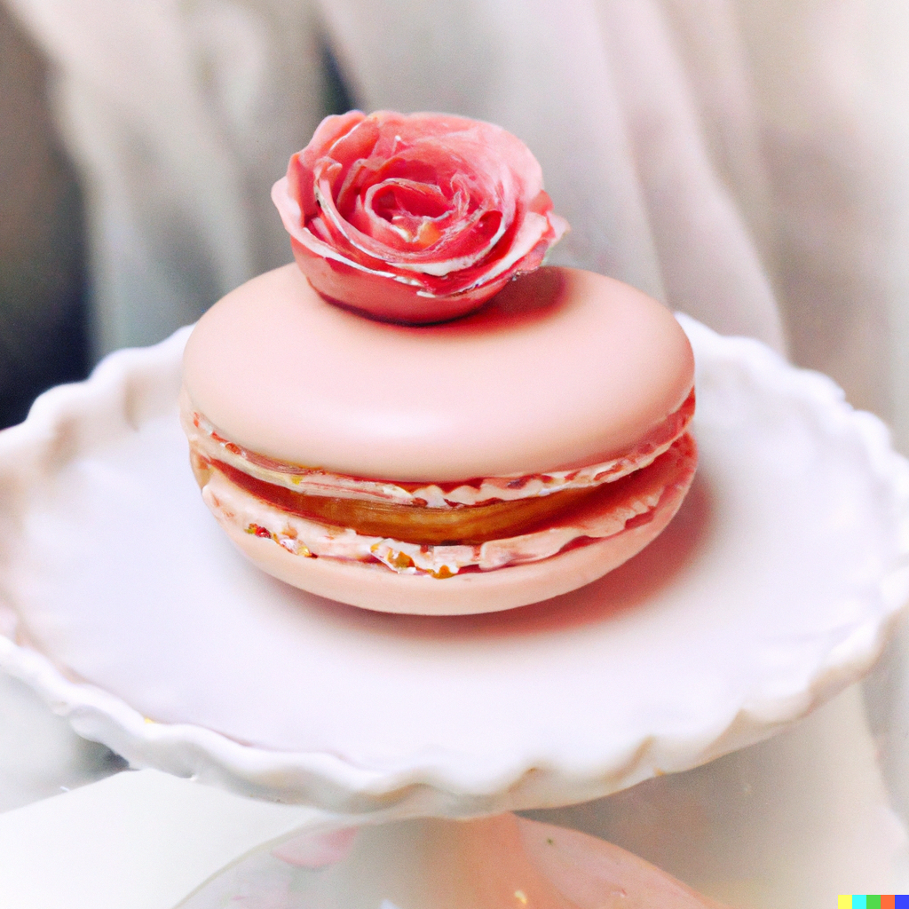

Rose Macarons

Ingredients:
- 200g almond flour
- 200g powdered sugar
- 150g granulated sugar
- 150g egg whites (aged for 24 hours at room temperature)
- 1/4 teaspoon rose extract
- Pink gel food coloring
- Rose petal decorations (optional)
For the filling:
- 150g unsalted butter, softened
- 300g powdered sugar
- 1-2 teaspoons rose water (adjust to taste)
- Pink gel food coloring
Instructions
- Prepare a baking sheet lined with parchment paper or a silicone baking mat.
- In a food processor, combine the almond flour and powdered sugar. Pulse a few times until well combined and any lumps are broken down. Sift the mixture into a large bowl and set aside.
- In a separate bowl, beat the egg whites with an electric mixer until foamy. Gradually add the granulated sugar while continuing to beat. Keep beating until stiff peaks form and the meringue is glossy.
- Add the rose extract and a few drops of pink gel food coloring to the meringue. Gently fold it into the almond flour mixture using a spatula. Continue folding until the batter is smooth and forms a thick, flowing consistency.
- Transfer the batter to a piping bag fitted with a round tip. Pipe small circles onto the prepared baking sheet, spacing them apart. Tap the baking sheet gently on the counter to remove any air bubbles. If desired, sprinkle rose petal decorations on top of each macaron shell.
- Let the macarons sit at room temperature for about 30 minutes to develop a dry, glossy surface. They should not stick to your finger when lightly touched.
- Preheat the oven to 300°F (150°C). Bake the macarons for 15-18 minutes, rotating the baking sheet halfway through. The macarons should have a smooth, firm shell and a slightly crisp bottom.
- Remove the macarons from the oven and let them cool completely on the baking sheet before attempting to remove them.
- While the macarons are cooling, prepare the filling. In a mixing bowl, beat the softened butter until creamy. Gradually add the powdered sugar and continue to beat until smooth and fluffy. Add the rose water and a small amount of pink gel food coloring, and mix until well combined.
- Transfer the filling to a piping bag fitted with a round tip. Pipe a small amount of filling onto the flat side of one macaron shell, then gently press another shell on top to create a sandwich. Repeat with the remaining macaron shells.
- Place the filled macarons in an airtight container and refrigerate for at least 24 hours to allow the flavors to meld together and the texture to soften.